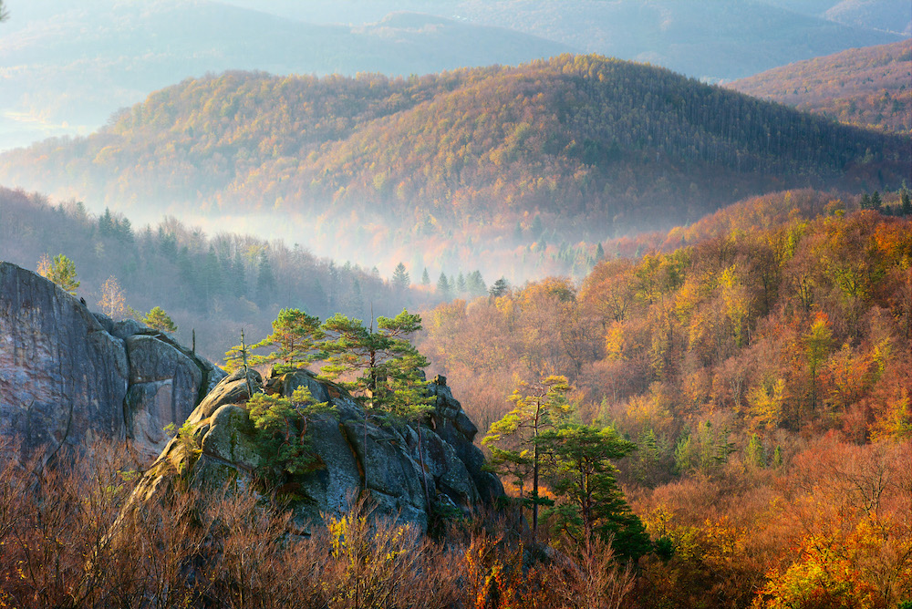

Оптимістична печера
Тернопільська область

Оптимістичну печеру відкрили у 1966 році, знаходиться вона у Борщівському районі Тернопільської області неподалік села Королівка. Це найдовша гіпсова печера у світі: довжина — близько 260 км. Вона досі повністю не досліджена, в експедиції сюди приїжджають спелеологи з усього світу. Всередині печери лабіринти, багато мінеральних утворень (кристалів, сталактитів, геліктитів) та навіть підземні озера. Подивитись є на що.
Скелі Довбуша
Івано-Франківська область
Скелі Довбуша — надзвичайно красивий скельно-печерний комплекс на висоті 668 метрів розташований неподалік від села Бубнища в Івано-Франківській області. Скельні виступи утворились тут приблизно 70 мільйонів років назад, їх висота сягає 80 метрів, ширина — 200 м, довжина — майже 1 кілометр.
Бакота
Хмельницька область

Село Бакота затопили під час будівництва Дністровської ГЕС, а на його місці утворилась Бакотська затока, яка приваблює все більше туристів завдяки неймовірно гарним краєвидам. Бакоту називають місцем сили: археологічні розкопки свідчать, що у цих місцях колись було багато язичницьких храмів, святилищ та кургани з жіночими похованнями.
Дністровський каньйон
Каньйон знаходиться на межі чотирьох областей: Івано-Франківської, Хмельницької, Чернівецької та Тернопільської. Село Заліщики знаходиться у Тернопільській області.

Дністровський каньйон знаходиться одразу у чотирьох областях, це найдовший каньйон в Україні — довжина 250 км. Усі знають його в основному за оглядовим майданчиком на Заліщики: село знаходиться на півострові, а по колу з трьох сторін його омиває Дністер (на першому фото).
Актівський каньйон
Миколаївська область

Актівський каньйон — природний комплекс з гранітних скель та валунів площею 250 гектарів, частина національного парку «Бузький Гард» та зовсім нетипова природна зона для українського степу. Це місце називають українським Гранд-Каньйоном, пейзажі тут гарні і незвичайні: річка з містичною назвою Мертвовод протікає серед вузьких ущелин та скель, висота яких місцями досягає 50 метрів (як двадцятиповерховий будинок).
Лемурійське озеро
Херсонська область

Одне з найгарніших і незвичайних місць України – рожеве озеро. Лемурійське озеро на Херсонщині називають українським Мертвим морем: солоність озера сягає позначки 300 грамів солі на літр води, що на 50 грамів більше, ніж у Мертвому. Рожевий колір з’являється завдяки водоростям Дуналіелла, які під дією сонця виробляють речовину, яка фарбує воду: чим спекотніше літо, тим більш насичений рожевий колір має вода.
Протяті Камені та Соколине око
Чернівецька область

Протяті камені — мальовничий скельний масив в Покутсько-Буковинських Карпатах, неподалік від перевалу Німчич у Чернівецькій області. Скелі утворились з пісковика, на деяких з них багато отворів різної величини — звідси й назва протяті. Одна з найцікавіших скель у масиві — Соколине око. Називається вона так, тому що в результаті ерозії на висоті приблизно 40 метрів утворилась кам’яна арка, що нагадує око. У підніжжі скелі також є невелика печера.
Грот Прийма
Львівська область

Грот Прийма знаходиться посеред лісу недалеко від міста Миколаїв у Львівській області. Грот доволі мало відомий серед туристів, але насправді це дуже визначна пам’ятка археології європейського значення. Цій печері понад 45 тисяч років, археологи знайшли тут сліди поселення та артефакти, що належали неандертальцям. Зовсім поряд з Приймою є ще кілька цікавих місць, які можна відвідати в рамках вихідного дня.